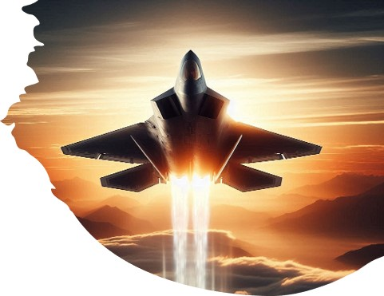
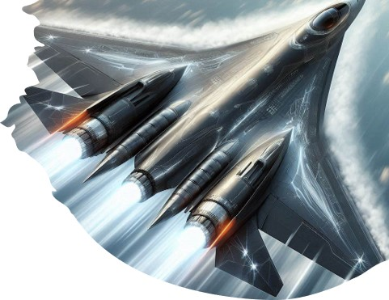
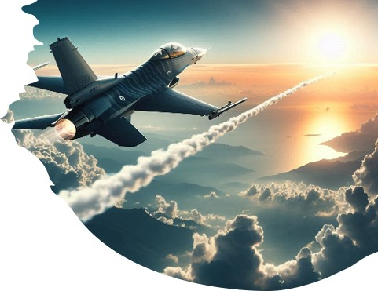

Capítulo 1: Sombras en el Horizonte
El año es 2079. Las tensiones entre las superpotencias del mundo alcanzan su punto máximo cuando recursos vitales comienzan a escasear y el control del cielo se convierte en la clave para el dominio global. A medida que las naciones construyen aviones de combate más avanzados, una nueva amenaza surge: *Vortex*, una organización militar secreta que opera desde las sombras, desatando el caos a través de ataques aéreos quirúrgicos y devastadores.
En respuesta, las superpotencias aceleran el desarrollo de sus cazas más avanzados, como el **F-22 Raptor**, el **Su-57 Felon** y el **F-16**, equipándolos con tecnologías de sigilo y armamento futurista. Sin embargo, las fuerzas de *Vortex* no solo poseen tecnología igual de avanzada, sino que también controlan una red de satélites y drones autónomos, haciendo su control del espacio aéreo casi impenetrable.
En esta guerra tecnológica, los pilotos más hábiles y las máquinas más avanzadas son el último bastión para detener a *Vortex* antes de que sus planes lleguen a un punto sin retorno. Las sombras en el horizonte indican que la verdadera batalla apenas comienza.
Capítulo 2: La Traición de los Cielos
A medida que el conflicto avanza, los gobiernos del mundo intentan formar una alianza temporal para enfrentar a *Vortex*. Sin embargo, los líderes de las superpotencias están divididos: las sospechas de traiciones y conspiraciones internas amenazan con romper la frágil coalición.
Durante una operación conjunta en los cielos de Europa del Este, un traidor dentro de las fuerzas aliadas revela información crítica a *Vortex*, lo que resulta en la emboscada de una flota de cazas F-16. La batalla que sigue es brutal, con bajas devastadoras en ambos lados. La alianza tambalea mientras las tensiones internas aumentan, y las esperanzas de unificar fuerzas contra *Vortex* se desvanecen.
En medio del caos, un grupo selecto de pilotos de élite, liderados por el experimentado comandante **Dante "Ghost" Torres**, se enfrenta a la misión más peligrosa de todas: descubrir al traidor mientras siguen luchando para contener el avance de *Vortex*.
Capítulo 3: La Grieta
La guerra llega a su punto culminante cuando *Vortex* pone en marcha su plan final: desatar un enjambre de drones armados desde su base secreta en la órbita baja de la Tierra. Las superpotencias, debilitadas y sin una estrategia clara, deciden lanzar un asalto desesperado sobre la base de *Vortex*, situada en los bordes de la estratósfera.
Los héroes, incluidos Ghost y su escuadrón de élite, vuelan a bordo de los cazas más avanzados jamás construidos, enfrentándose a defensas automatizadas, drones y cazas enemigos en un combate aéreo sin precedentes a las puertas del espacio. Durante la misión, descubren que *Vortex* planea usar un arma electromagnética para desactivar las defensas globales y tomar el control total del cielo.
En un último esfuerzo, Ghost y su equipo realizan una maniobra suicida para desactivar la base de *Vortex* desde dentro. Sin embargo, la batalla no termina allí. Con las defensas de *Vortex* destruidas, el verdadero enemigo finalmente se revela: un traidor inesperado en las filas de las superpotencias que ha estado manipulando la guerra desde el principio.
